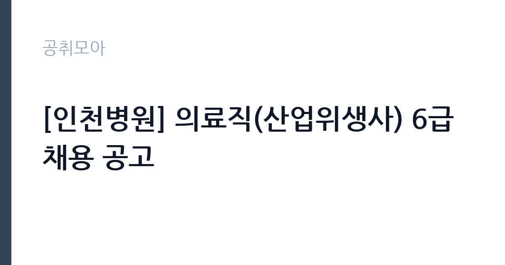

[공공기관] [인천병원] 의료직(산업위생사) 6급 채용 공고
근로복지공단 · 인천 · 마감 2026-11-02 (D-10) · 출처 잡알리오

한눈에 보는 모집 조건
| 기관 | 근로복지공단 |
|---|---|
| 공고명 | [인천병원] 의료직(산업위생사) 6급 채용 공고 |
| 고용형태 | 정규직 |
| 근무지 | 인천 |
| 게시일 | 2026-10-23 |
| 마감일 | 2026-11-02 (D-10) |
지원자격, 이렇게 읽으세요
- 공공기관 채용공시
- 세부 조건은 원문 공고문 확인
모집단위는 의료직(산업위생사) 6급 1명입니다. 정규직 채용은 기간의 정함이 없는 근로계약을 전제로 합니다. 수습 기간을 두고 평가한 뒤 정규직으로 확정하는 절차가 일반적이며 기관의 인사 규정과 임금 체계를 적용받습니다. 서류 단계에서 요건을 충족하지 못하면 이후 전형을 준비할 기회가 없습니다. 학력·경력·자격 요건을 항목별로 대조해 표시해 두고, 경력은 재직증명서와 경력증명서로 입증해야 합니다. 증명서에 직무 내용이 구체적으로 적혀 있지 않으면 경력으로 인정받지 못하는 경우가 있으니 발급 전에 기재 내용을 확인하십시오. 자격증은 유효 기간과 등록 상태까지 확인해야 하고, 자격 취득 예정자로 지원하려면 공고문에 예정자 허용 조항이 있는지 반드시 봐야 합니다. 산업위생관리(산업)기사 자격증 소지자가 필수입니다. 응시자격 판단 기준일은 응시원서 마감일이고, 임용일 기준 만 60세 미만이어야 하며 군복무 중이라면 임용예정일 전 전역이 가능해야 합니다. 경력 요건은 총 경력이 아니라 해당 직무 경력만 인정하는 경우가 있으니, 증명서의 직무 기술을 함께 확인하십시오.
이 공고의 포인트
이 공고의 첫 번째 포인트는 고용 형태입니다. 수습 기간 평가를 통과하면 기간의 정함이 없는 신분이 되어 고용이 안정됩니다. 두 번째는 모집단위가 분명하다는 점입니다. 의료직(산업위생사) 6급 1명 단위로 선발하므로 배치 이후 담당 업무의 범위를 미리 가늠할 수 있습니다. 세 번째는 근무지입니다. 인천 기준으로 근무지가 정해져 있어 통근 시간과 비용을 함께 계산해야 합니다. 접수 마감은 2026-11-02로 길지 않아, 공고를 늦게 확인하면 준비 시간이 그대로 줄어듭니다. 모집 인원이 적은 만큼 지원자 한 명 한 명의 서류 완성도가 당락에 크게 작용합니다.
전형은 어떻게 진행되나
선발 절차는 원문 공고문에 단계별로 적혀 있습니다. 전형은 서류심사와 면접심사를 기본으로 하고 직무에 따라 필기나 실기, 체력검정이 추가됩니다. 서류 단계에서는 응시자격 충족 여부와 제출서류 형식을 확인하며 이 단계에서 탈락하는 지원자가 적지 않습니다. 면접은 직무 이해도와 경험을 확인하는 방식으로 진행되고 발표는 개별 통보나 홈페이지 게시로 이뤄집니다. 최종합격 이후에는 결격사유 조회와 채용 신체검사가 이어지며 이 절차에서 문제가 확인되면 합격이 취소될 수 있습니다. 구체적인 전형 단계와 배점은 공고문에 표로 정리되어 있으니 원문을 기준으로 준비하십시오. 동점자 처리 기준이 공고문에 명시되어 있으니 배점 항목을 미리 확인해 두십시오.
원문에서 확인한 전형 방식
○ 채용분야 응시자격 - 산업위생사: 산업위생관리(산업)기사 자격증 소지자 ※ 모든 전형 응시자격은 응시원서 마감일 기준 ○ 병역사항: 「병역법」 제76조에서 정한 병역의무 불이행 사실이 없는자 ※ 현재 군복무 중인 경우 임용예정일 이전 전역이 가능한 자 ○ 연령요건: 연령제한 없음(단, 임용일 기준 60세 미만(정년)인 자)
이런 분께 추천해요
- 인천에서 출퇴근이 가능한 분
- 산업위생·작업환경 측정 직무 경험이나 관련 자격을 갖춘 분
- 정규직 조건과 근무 기간을 확인하고 지원할 수 있는 분
지원 전 체크리스트
- 응시자격 요건을 충족하는가 — 경력은 증명서로 입증해야 합니다
- 수습 기간과 정규직 전환 조건을 확인했는가
- 제출서류 목록을 모두 준비했는가 — 누락 시 서류 단계에서 탈락합니다
- 접수 마감 2026-11-02 이전에 접수 방식을 확인해 제출했는가
모집 일정과 제출 타이밍
접수는 2026-11-02에 마감됩니다. 공고 게시일 2026-10-23부터 계산하면 준비 기간은 약 10일입니다. 우편 접수는 도착 기준으로 판정되는 경우가 많아 마감일 소인만 믿으면 안 됩니다. 제출 서류는 공고문에 적힌 순서대로 정리하면 담당자가 확인하기 쉬워 누락이 줄어듭니다. 인천 근무지는 지역 내 이동 거리가 길어 출퇴근 시간이 생각보다 많이 걸릴 수 있습니다.
직무 이해하기: 공공기관
공공기관은 도로와 수자원, 농지, 부동산 시장 관리 같은 공적 기능을 수행합니다. 현장 사업소는 도로와 시설 유지 관리, 조경과 환경 관리 업무를 직접 수행하며 계절 사업에 따라 기간제 인력을 채용합니다. 근로복지공단 소속병원은 기업체 보건대행과 작업환경측정, 특수건강진단을 수행합니다. 산업위생사는 사업장을 방문해 유해인자 노출 수준을 측정하고 결과를 정리해 보고서를 작성합니다. 업무 매뉴얼과 지침이 문서로 정리되어 있어 절차를 익히면 반복 업무는 빠르게 손에 붙습니다.
자기소개서 작성 팁
산업위생·작업환경 측정 지원서는 직무 연관성을 앞세우는 것이 핵심입니다. 첫 문단에 지원 직무와 본인 경험을 한 문장으로 연결하고, 이어서 담당했던 업무의 규모와 결과를 수치로 제시하십시오. 구성은 지원 동기, 직무 경험, 기여 방안 순서가 무난합니다. 지원 동기는 근로복지공단의 사업 중 본인이 관심을 가진 부분을 한 가지로 좁혀 서술하고 추상적인 표현은 줄이십시오. 직무 경험은 담당했던 업무와 규모, 결과를 수치로 제시하면 설득력이 올라갑니다. 기여 방안은 입사 후 첫 3개월과 1년 계획으로 나눠 쓰면 준비도가 드러납니다.
면접 준비 포인트
면접에서는 산업위생·작업환경 측정 직무를 얼마나 이해하고 있는지, 그리고 근로복지공단의 사업을 어느 정도 알고 있는지 확인합니다. 답변은 상황, 판단, 조치 순서로 정리하면 전달이 분명해집니다. 면접 당일 신분증과 제출서류 원본을 요구하는 경우가 있으니 공고문의 준비물 목록을 확인하십시오.
급여·근무조건 읽는 법
정규직 채용은 수습 기간 평가를 통과하면 기간의 정함이 없는 신분이 되어 고용이 안정됩니다. 공공기관 정규직은 기관의 직급별 임금표와 성과급 규정을 적용받고, 기본연봉에 경영평가 성과급이 더해지는 구조가 일반적입니다. 2026년 적용 최저임금은 시급 10,320원, 월 환산 2,156,880원(고용노동부 고시 제2025-47호)이며, 공무원 신분으로 임용되는 직위는 별도 봉급표를 적용받습니다. 기본연봉만 공개되고 성과급·수당은 공고문에 없는 경우가 많으므로, 지원 전 처우표와 인사규정을 함께 확인하십시오. 근로복지공단 소속병원 의료직 6급은 공단 보수규정의 직급별 임금표를 적용받고, 신규 임용 시 3개월가량 시보로 임용된 뒤 근무성적 평가를 거쳐 정규직으로 임용되는 절차가 일반적입니다(2021년 안산병원 산업위생사 공고 사례). 산업위생사는 작업환경측정과 특수건강진단 업무를 수행하므로 관련 자격·면허 수당이 붙을 수 있습니다. 공단 신입 공채 초봉은 채용 플랫폼에서 3,500만원대 후반으로 안내된 사례가 있으나 이는 일반직 기준이며, 의료직 6급 실제 금액은 공고문 처우표에서 확인해야 합니다. 위 수치는 공개된 봉급표·보도·유사 공고 기준이며, 이번 공고의 확정 금액은 첨부 공고문 처우표에서 확인하십시오. 보수는 보통 기본급, 각종 수당, 상여로 나뉘어 지급됩니다. 기본급만 보면 적어 보여도 정액급식비와 명절휴가비, 복지포인트가 붙으면 실제 총액이 달라지므로 항목별로 확인해야 합니다. 4대 보험과 퇴직급여 적용 여부도 함께 보십시오. 기간제는 계약 기간이 짧아 월 급여가 높아도 연간 총액은 적을 수 있습니다.
자주 묻는 질문
- 선발 인원과 직급은 어떻게 되나요?
이번 공고의 모집단위는 의료직(산업위생사) 6급 1명입니다. 직종별 인원과 직급은 공고문 모집분야 항목에 표로 제시되어 있으니 원문에서 확인하십시오. - 근무지는 어디인가요?
인천입니다. 세부 근무지와 출퇴근 조건은 원문 공고문의 근무예정지 항목에서 확인할 수 있습니다. - 보수는 얼마인가요?
정규직 신분에 따라 근로복지공단의 임금 규정 또는 보수규정을 적용받습니다. 본문에 확정 금액이 없으므로 첨부 공고문 처우표에서 기본급과 수당을 나눠 확인하십시오.
함께 보면 좋은 공고
[공공기관] 우체국물류지원단 서울지사 동서울물류사업소 기간제(발착직) 채용 공고 — 마감 2026-10-29[공공기관] [광주보훈병원] 중증장애인 체험형 청년인턴(재택 사무보조) 채용 공고 — 마감 2026-11-02[공공기관] 국방기술품질원 2026년 하반기 정기채용(임용후보자(정규직, 무기사업직)) — 마감 2026-11-05출처: 잡알리오 공개정보를 바탕으로 공취모아가 정리한 안내글입니다. 모집 조건·일정은 변경될 수 있으니 지원 전 반드시 원문 공고문을 확인하세요. 본 글은 정보 제공용이며 합격을 보장하지 않습니다.